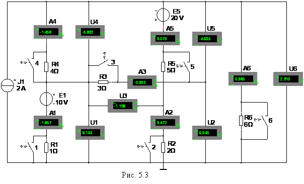

Задание 2. Запустить лабораторный комплекс Labworks и среду МS10 (щёлкнув мышью на команде Эксперимент меню комплекса Labworks). Открыть файл 5.3.ms10, размещённый в папке Circuit Design Suitе 10.0 со схемой цепи постоянного тока (рис. 5.3), или собрать схему цепи на рабочем
поле среды МS10, и установить
параметры элементов:
J = 2 А, Е1 = 10 Ом, 
 , R2 = 2 Ом, R3 = 3 Ом,
R4 = 4 Ом, R5 = 5 Ом, R6 = 6 Ом, где N – номер записи фамилии студента в учебном журнале
группы, режим DС работы измерительных приборов, внутренние сопротивления RА = 1
ном и RV = 10
Mом амперметров и вольтметров.
При этом выбрать полярность включения амперметров и вольтметров, совпадающей
с принятыми при расчёте схемы направлениями токов ветвей.
, R2 = 2 Ом, R3 = 3 Ом,
R4 = 4 Ом, R5 = 5 Ом, R6 = 6 Ом, где N – номер записи фамилии студента в учебном журнале
группы, режим DС работы измерительных приборов, внутренние сопротивления RА = 1
ном и RV = 10
Mом амперметров и вольтметров.
При этом выбрать полярность включения амперметров и вольтметров, совпадающей
с принятыми при расчёте схемы направлениями токов ветвей.
Запустить программу MS10 (щелкнуть мышью на цифре 1
кнопки ) и занести в табл. 5.1 значение тока IkЭ заданной ветви схемы, которое не
должно отличаться от расчётного значения Ikр более, чем на (3…4) %.
Скопировать
схему (рис. 5.3) на страницу отчёта.

Согласно
варианту (см. табл. 5.1) убрать один из проводников,
соединяющий амперметр заданной ветви с узлами схемы. Запустить программу моделирования
и занести показание
вольтметра (UkХ = Eэг) в табл. 5.1.
Восстановить схему (подключить амперметр к
узлу схемы), а резистор этой ветви посредством соответствующего ключа замкнуть
накоротко. Запустить программу.
Показание амперметра Iк занести в табл. 5.1.
По данным измерений расcчитать и занести в табл. 5.1:
- внутреннее сопротивление эквивалентного генератора
- ток в заданной ветви с сопротивлением Rk
IkЭГ
Убедиться, что полученное значение тока IkЭГ не отличается от измеренного значения тока IkЭ в заданной ветви и от рассчитанного значения Ikр (с допустимой погрешностью, не более (3…4) %).